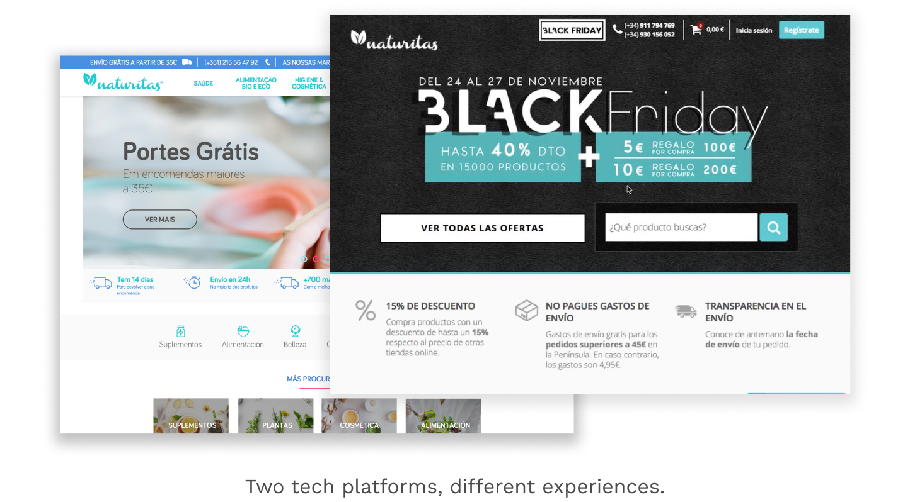
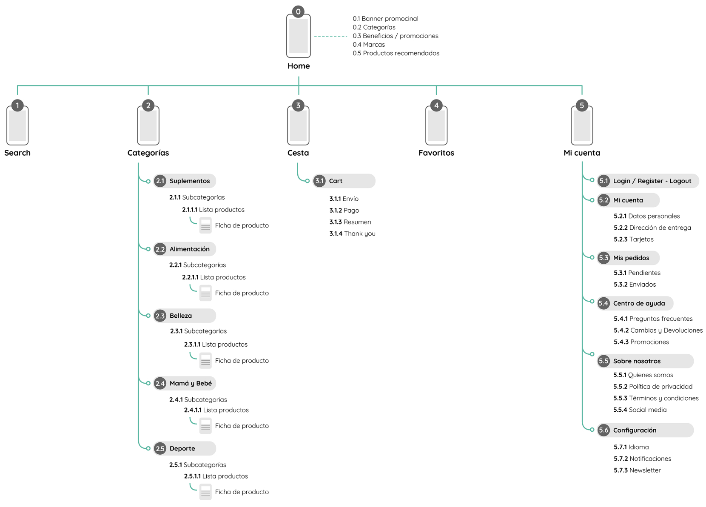

Natural products startup needed a whole UX strategy to create a new e-shop, native APPs and unify their brand image to target the intended public.
A UX process was made including research, user flows, IA, wireframing, prototyping, implementation and A/B tests. In parallel, a new branding was realized in collaboration with the Marketing team.
One of the first things noticed was how the UX was entirely different between the countries and unreliable in terms of efficiency and branding. None of the websites looked to hit the target: people looking to buy healthy products.
We investigated the business needs, marketing insights, buying habits, customer care feedback and data.
Then, we created a heuristic evaluation of current experience to identify the pain points. The next step was to schedule in-person interviews: best buyers and occasional clients. The sessions were really enlightening to all participants, to put themselves on the user's shoes.
Based on the interviews we created two main personas. The first was focused on a particular product or health condition while the other was interested in a wellness lifestyle and was more prone to experiment with new products.
To understand the different opportunities and pain points in each step of the users, we built Customer journeys using the personas mental model.
Simultaneously, the branding and style guides were designed.
To organize the information we used a site map with an e-commerce structure for both the mobile and web responsive versions.
We developed a Categorization tree for +15.000 products in 4 levels.
It required in-depth research and collaboration with naturopaths.
Once defined, the tree was tested with a card sorting to ensure its efficiency.
In the ideation phase, it was time of building mock ups, align user flows and define the MVP for a web and later for the APPs.
Once the high fidelity mockups were validated, the development and follow up with the developers started on the different channels.
Several A/B Tests were run on the website to understand the users behaviors and, in the last instance, increase the conversion and revenue metrics.
A lot of learning was gathered and appllied on production. As an example, it was discovered that the product card on horizontal performs better on mobile than the vertical display.
The different UX / UI initiatives helped the company accelerate its growth and internationalization process. In the long run, several KPIs and customer satisfaction were increased.
Nowadays, Naturitas is one of the largest players in the natural products sector, well recognized by its audience and continues to apply several UX lessons to its products and platforms.
UX/UI & Branding
2017 - 2018
Naturitas